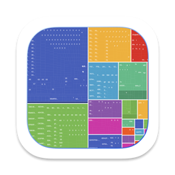
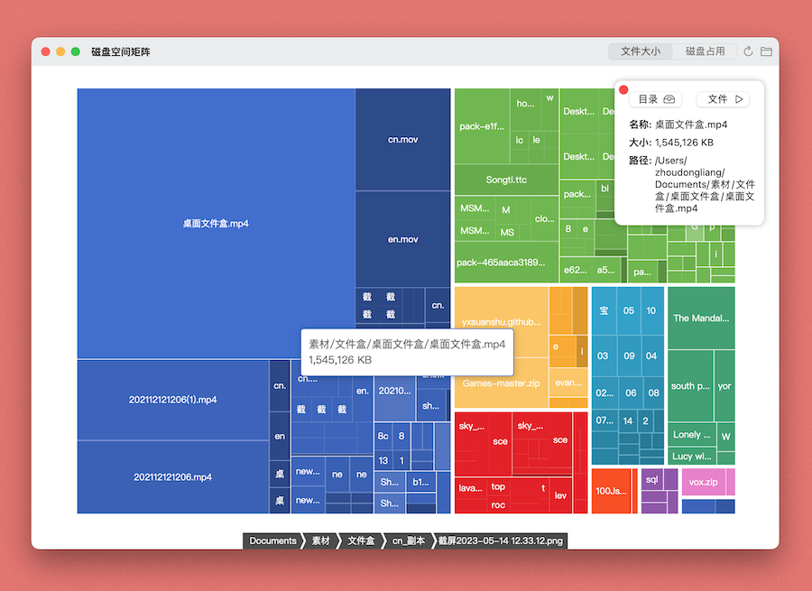
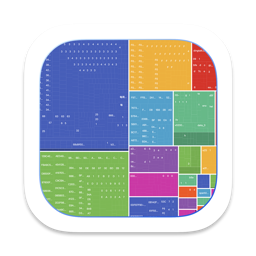
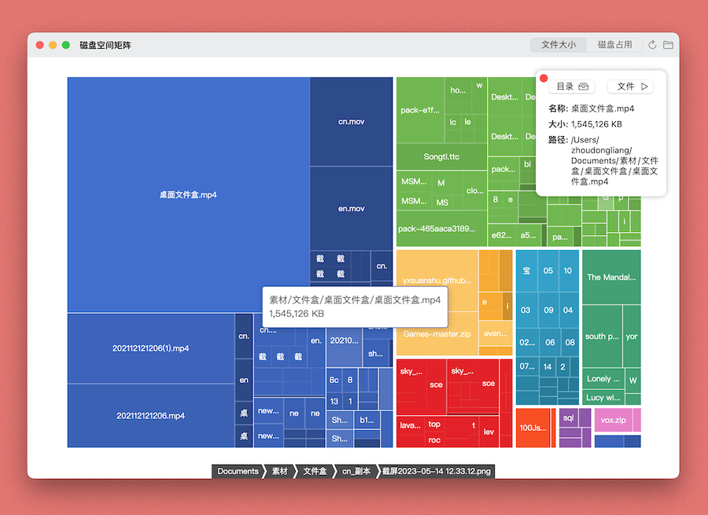

磁盘空间矩阵
Disk space matrix

功能介绍
磁盘空间分析工具
分析你磁盘上某个目录下的每个文件、文件夹的实际大小和占用磁盘情况，通过矩阵树的形式展示出来。
你可以点击某个目录，App将显示出详细信息，并提供跳转按钮，方便你快速找到这个文件。


功能介绍
磁盘空间分析工具
分析你磁盘上某个目录下的每个文件、文件夹的实际大小和占用磁盘情况，通过矩阵树的形式展示出来。
你可以点击某个目录，App将显示出详细信息，并提供跳转按钮，方便你快速找到这个文件。
